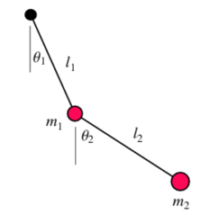
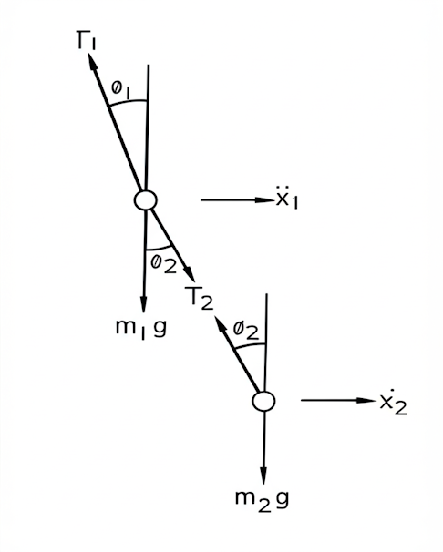
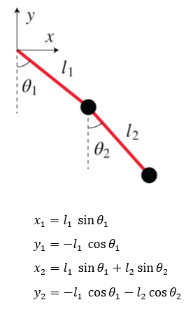

A double pendulum system as shown in Fig 1, consists of two-point masses m1 and m2 suspended by strings of length l1 and l2 as shown below. Let the system vibrates in vertical plane with small amplitudes, under which conditions the masses may be considered to have only horizontal motion. Let θ1 and θ2 be the angles the strings at any instant make with vertical and let x1 and x2 be the horizontal displacements of the two masses, such that the following relationships holds good for small amplitudes.
sinθ1=θ1=l1x1 sinθ1=θ2=l2x2−x1
For finding natural frequency and mode shapes:
Considering no motion in vertical direction, the vertical components of forces on each of two masses must balance. Therefore,
T2=m2g T1=m1g+T2=(m1−m2)g

Fig 1. Repesentation of variables in the double pendulum

Fig 2. Free body diagram of the double pendulum
Writing down the equation of motion of two masses for motion in horizontal direction from Fig 2, we have
m1x¨1=T2sinθ2−T1sinθ1 m2x¨2=−T2sinθ2
If we take T1 and T2 values in the above equation, we get
Equating the two expressions in the above two equations and cross multiplying.
If E=(m2g)/l2 and F=(m1+m2)g/l1 , then the frequency equation is
ω4−[m1m2(m1+m2)E+m2F]ω2+m1m2FE=0
The above equation is quadratic in ω2 and gives two values of ω2, and therefore two positive values of
ω corresponding to two natural frequencies ωn1 and ωn2 of the system. The above equation is called the frequency equation since the roots of this equation gives the natural frequencies of the system.
Considering,
m1=m2=m l1=l2=l
The above equations become,
X2X1=l3g−ω2g/l
X2X1=lglg−ω2
which gives,
l3g−ω2g/l=lglg−ω2
or
g2w4−lg4w4+l22=0
which is the frequency equation.
Solving for ω, using quadratic equation we have the two values of the natural frequencies as,
wn1=lg(2−2) wn2=lg(2+2)
The amplitude ratio of the equations are:
X2X1=−m1ω2+[l1m1+m2+l2m2]gl2m2g
X2X1=l2m2gX1−m2ω2+[l2m2]g
If in either of the equations, on substituting for ω the value of ωn1, we have the first mode shape of the system i.e., when the system is vibrating with the first natural frequency ωn1, the mode shape is such that the ratio of the amplitude of two masses is equal to the solution of above equation.
Similarly, in either of the equations, substituting for ω the value of ωn2, we have the second mode shape of the system i.e., when the system is vibrating with the second natural frequency ωn2, the mode shape is such that the ratio of the amplitude of two masses is equal to the solution of above equation.
For calculating the motion of point masses:
The cartesian co-ordinates of two-point masses in a double pendulum are,

On solving the equations of motion in polar coordinates and we are going to use the Lagrangian method (L=T−V where T is kinetic energy of system and V is potential energy of system) to derive them.
Where μ=1+(m1+m2), θ¨1 and θ¨2 are angular accelerations of point masses m1 and m2 and θ˙1 and θ˙2 are angular velocities of point masses m1 and m2.